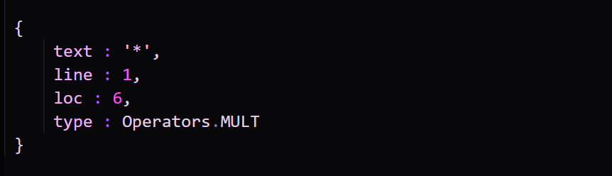

Have you ever wondered how computers parse expressions ?
Well, it's not as simple as you may think. But it's not too difficult either !
First off, it needs to breakdown the expression into smallest possible chunks called 'tokens'.
So for a simple mathematical expression like
'1 + 2*3' , the tokens would be
['1','+','2', '*' , '3'].
Usually, a token is not just a string but a number containing additional information like it's position and type. So
a '*' token would look like :

But for something as simple as a mathematical expression parser, a token can simply be a '*' or a '12'.
Next, we create what's called an AST or an
Abstract Syntax Tree.
What that means, is we arrange the tokens in a Binary Tree data structure which when traversed properly will
evaluate to the
result of the expression.
If we perform post-order traversal on the tree, then we can successfully evaluate the expression given the tree was
formed properly.
What I have here, is a simple expression parser that employs the
Pratt
parsing algorithm to build a parse tree and then
visualizes how a computer would go about evaluating it. You can find the source code for this on github.
Here is a much simpler expression parser I wrote in Javascript that can parse expressions like
'1 + 3%2 - (1 - 7 ^ 2
% 2 * 3)'